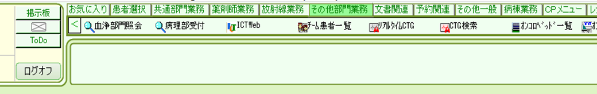
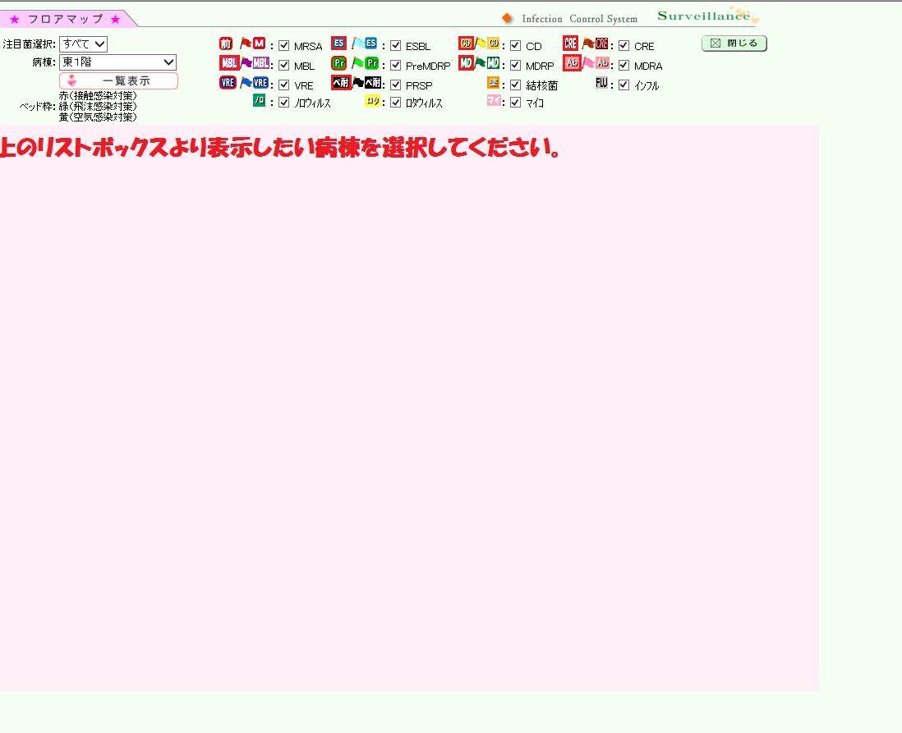
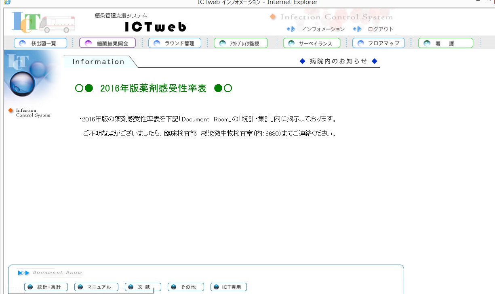
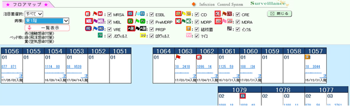
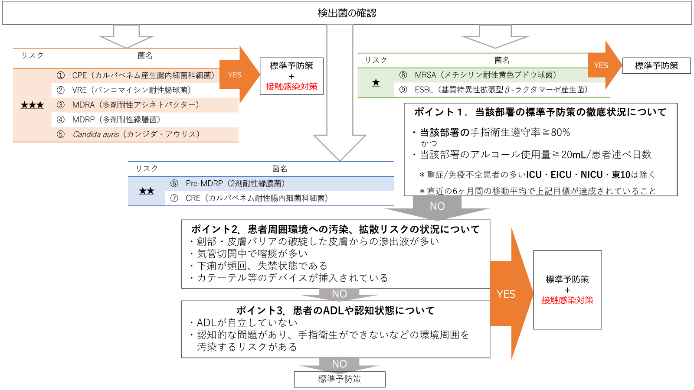
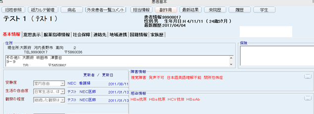
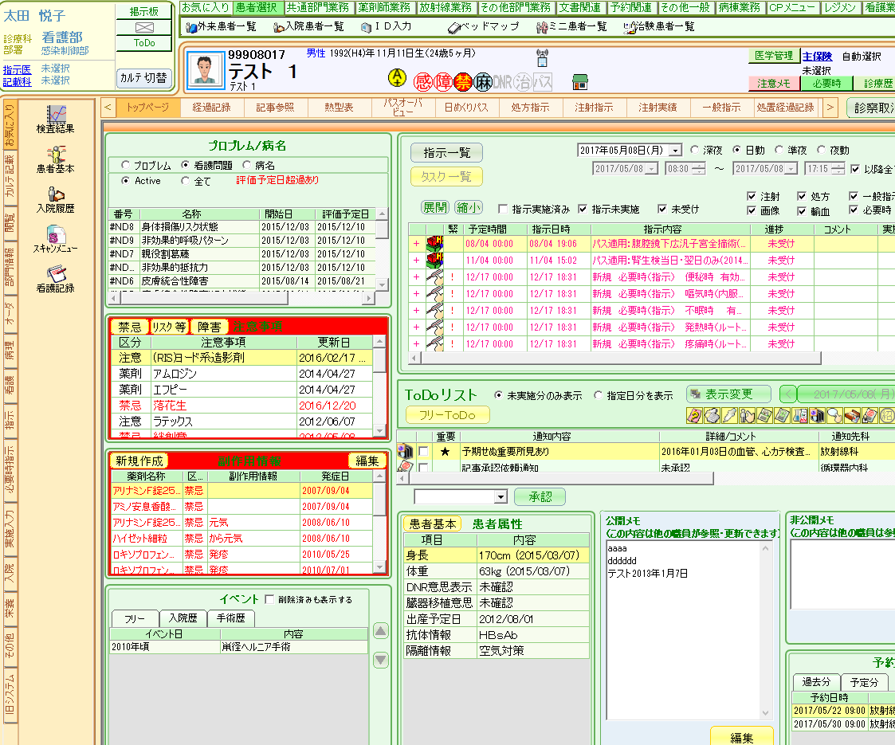
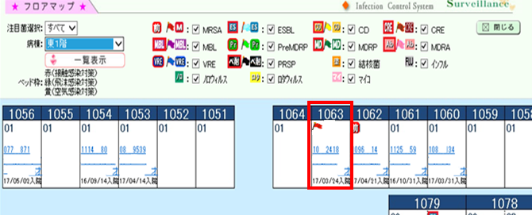
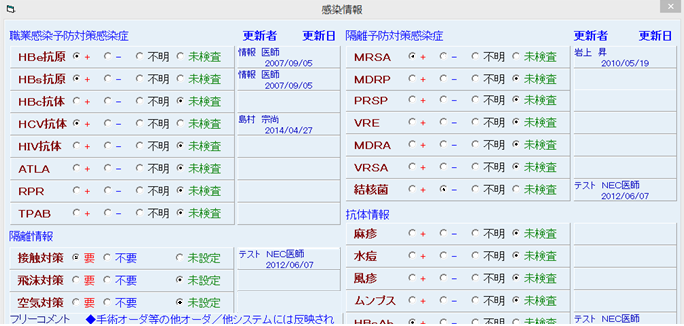
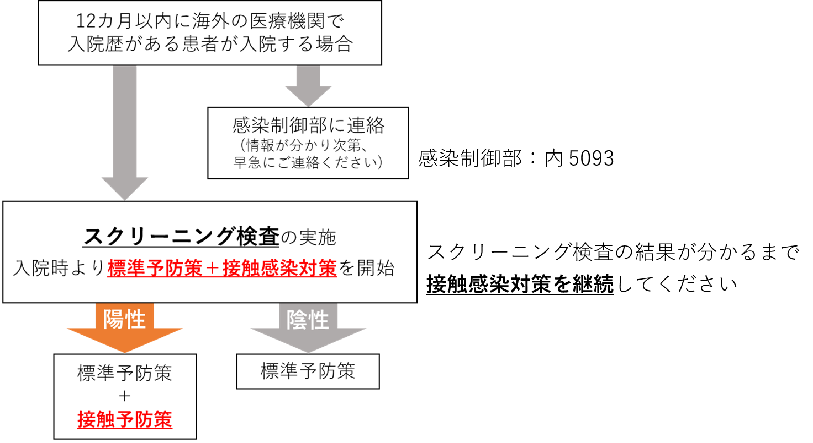

Ⅴ. 疾患別感染対策 1. 薬剤耐性菌
薬剤耐性菌は、1つ以上のクラスの抗菌薬に耐性を示す細菌である。医療機関等では、多くの抗菌薬の使用が行われるため、特に注意が必要である。薬剤耐性菌の制御には、適切な感染対策の実施と、抗菌薬適正使用が必要である。
特に、手指衛生の遵守状況と薬剤耐性菌の拡散状況には、関連性が高いため、平時からの標準予防策の遵守ができていることが特に重要である。
- 薬剤耐性菌の注意リスク
リスク | 菌 名 | |
★★★ | ➀ | CPE （カルバペネマーゼ産生腸内細菌科細菌） |
② | VRE （バンコマイシン耐性腸球菌） | |
③ | MDRA （多剤耐性アシネトバクター）＊MBL産生菌含む | |
④ | MDRP （多剤耐性緑膿菌）＊MBL産生菌含む | |
⑤ | Candida auris （カンジダ・アウリス） | |
★★ | ⑥ | Pre-MDRP(2剤耐性緑膿菌) |
⑦ | CRE （カルバペネム耐性腸内細菌科細菌） | |
★ | ⑧ | MRSA （メチシリン耐性黄色ブドウ球菌） |
⑨ | ESBL産生菌 （基質特異性拡張型β-ラクタマーゼ産生菌） |
- 薬剤耐性菌の検出状況の確認
ICTWeb🄬システムにて、毎日部署の薬剤耐性菌の新規検出状況を確認する。

電子カルテ ⇒ ICTWeb

フロアマップ
新規検出菌はフラッグにて表示されている。
- 病棟で薬剤耐性菌が検出された際の対応
- 下記フローチャートに従って、感染対策についてアセスメントを行う。
アセスメント結果は、記事にテンプレートにて記載する（Ⅱ.隔離予防策2.経路別感染対策の項参照）
病棟で薬剤耐性菌が検出された際の対応フローチャート

- 経路別感染対策を追加した場合、対策の入力を行う
- 患者基本から感染情報のタブをクリック




隔離情報を入力すると、フロアマップに反映された経路別感染対策の色表示がされる
- 患者基本から感染情報のタブをクリック
- 対策の実施
- 経路別感染対策を追加した場合、対策の入力を行う
Ⅱ.隔離予防策 2.経路別感染対策に準じる
(４) 過去1年間で海外の医療機関に入院歴のある患者への対応
海外の医療機関で濃厚な医療曝露を受けると、その地域で流行している薬剤耐性菌を保菌する可能性があること、これらの患者から他の患者へ薬剤耐性菌が伝播する可能性があることはグローバル化が進む昨今において世界中で懸念されている。
海外からの薬剤耐性菌による院内でのアウトブレイクを防ぐために、『12カ月以内に海外の医療機関で入院歴を有する患者』が当院へ入院する場合は、感染制御部へ連絡と以下のスクリーニング検査を行い、スクリーニング結果が判明するまでは標準予防策＋接触感染対策を行うこととする(フローチャートは以下の通り)。
スクリーニング検査について
① 鼻腔ぬぐい液：『*9 微生物➡04 鼻腔内分泌液』でオーダーしてください
② 糞便(糞便が出ない場合は直腸スワブで提出)：『*9 微生物➡14 糞便(監視培養)』でオーダーしてください
(＊背景や渡航先次第で、追加のスクリーニング検査を御依頼することがあります)
それぞれ検査方法選択場面で、以下をチェックして提出してください
・【一般細菌】03 培養・同定―好気
- 21. 感受性セット選択画面：01 A・B・Cいずれか
- 25. 情報コメント選択画面：フリーコメントに『渡航歴スクリーニング』と入力
